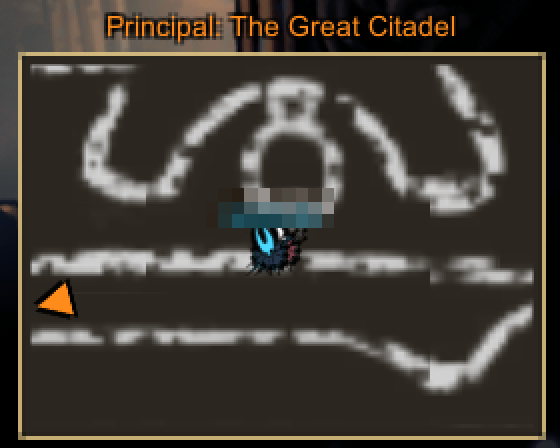
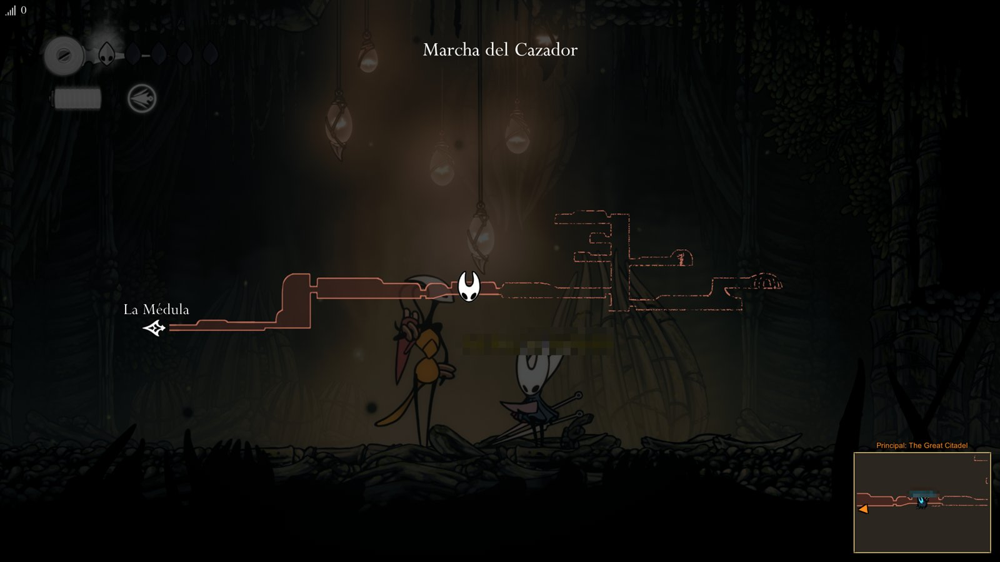

Mod gratis para Hollow Knight: Silksong
Un minimapa para jugar en equipo.
CoopMinimap muestra a tu compañero en el mapa, te avisa cuando cae y te marca a dónde ir. Es un complemento del mod cooperativo SSMP.
Gratis y de código abierto · Código en GitHub
Es una versión beta. La 0.6.3 todavía no la jugamos en una partida completa. La versión anterior, la 0.6.0, sí la probamos en cooperativo con dos PC. Si algo se ve raro, cuéntanos en GitHub.
Cómo se ve



Fotos de una partida real con la versión 0.6.0, del 27 de octubre de 2026. Tapamos los nombres de los jugadores. Cuando probemos la 0.6.3, ponemos fotos nuevas.
Qué hace
- Un minimapa en la esquina, hecho con el mapa del propio juego. Se ve como el mapa rápido: bancas, tiendas, marcas de misión, las marcas que pusiste y los nombres de las zonas vecinas.
- Tu compañero en el mapa, con su nombre, en el minimapa y en el mapa grande de Interactive Map. Si se aleja, una flecha en el borde del minimapa te dice hacia dónde está.
- Aviso de «compañero caído»: cuando cae y queda en su capullo, te dice cuántos de los 5 golpes lleva y si está en otra sala.
- Objetivos marcados: un anillo naranja para el principal y uno morado para los secundarios.
- F9 te lleva junto a tu compañero cuando están en la misma sala, para salir de un atasco.
- F6 da 1000 rosarios. Viene apagado; lo puedes prender en los ajustes.
- Arregla un error del juego que el modo cooperativo puede provocar, y evita que un panel invisible de Interactive Map bloquee los clics en los menús.
- Habla en español si tu juego está en español; si no, en inglés.
- No manda nada por internet: cada jugador decide si lo usa.
Qué necesitas
Silksong en PC
Hollow Knight: Silksong en Windows. Lo probamos con la versión 1.0.30000 del juego.
El mod cooperativo
SSMP en su versión cooperativa, de Candy-649 (silksong-coop-mod). CoopMinimap 0.6.3 está hecho para su versión 0.4.135. Su instalador también pone BepInEx.
Interactive Map
El mod de mapa de Pilout. Búscalo como «Interactive Map» en Nexus Mods. Es necesario: CoopMinimap no funciona sin él. Lo probamos con la 1.1.9.
Los dos jugadores tienen que tener la misma versión del mod cooperativo. CoopMinimap lo instala cada uno en su PC; si solo uno lo tiene, a ese le funciona igual.
Cómo instalarlo
- Instala el mod cooperativo. En su página, baja el archivo
silksong-coop-mod-….zip(no el «Source code»), descomprímelo y abreINSTALL.bat. Ese instalador busca el juego, guarda una copia de tus partidas y pone BepInEx y el mod. Nosotros usamos la versión 0.4.135. - Instala Interactive Map. Entra a Nexus Mods, busca «Interactive Map» entre los mods de Hollow Knight: Silksong y sigue sus instrucciones.
- Cierra el juego.
- Baja CoopMinimap: CoopMinimap-0.6.3.zip.
- Abre la carpeta del juego. En Steam, haz clic derecho en Hollow Knight: Silksong y elige Administrar → Ver archivos locales.
- Descomprime el zip en esa carpeta, la que tiene
Hollow Knight Silksong.exe. CoopMinimap tiene que quedar junto aSSMP.dll, así:Hollow Knight Silksong ├─ Hollow Knight Silksong.exe └─ BepInEx └─ plugins └─ SSMP ├─ SSMP.dll ├─ CoopMinimap.dll ├─ CoopMinimap-README.txt └─ CoopMinimap-LICENSE.txtSi tuSSMP.dllestá en otra carpeta, ponCoopMinimap.dlljunto a él. - Abre el juego y conéctate con tu compañero. Unos segundos después, el chat dice «CoopMinimap: F9 = ir junto a tu compañero, F8 = estilo del minimapa, F10 = mostrar u ocultar». Eso quiere decir que funciona.
Para ver a tu compañero cuando está en otra sala, el anfitrión (el que creó la partida) escribe en el chat /set globalmapicons true. Si hace falta, CoopMinimap te lo recuerda al conectarte.
Para quitarlo, borra CoopMinimap.dll, CoopMinimap.cfg y los dos .txt de CoopMinimap.
Teclas
| Tecla | Qué hace |
|---|---|
| F8 | Cambia el minimapa: el del mapa del juego o el de Interactive Map (MapGenie). |
| F10 | Muestra u oculta el minimapa. |
| Re Pág / Av Pág | Acerca o aleja el minimapa (también + y - del teclado numérico). |
| F9 | Te lleva junto a tu compañero cuando están en la misma sala. Viene prendido. |
| F6 | Te da 1000 rosarios. Viene apagado. |
Ajustes
La primera vez que abres el juego, CoopMinimap crea el archivo CoopMinimap.cfg junto a CoopMinimap.dll. Para cambiar algo, cierra el juego, abre ese archivo con el Bloc de notas, cambia el valor que va después del = y guarda.
| Ajuste | Qué hace | Viene así |
|---|---|---|
rosary_key | F6 da 1000 rosarios (true = prendido, false = apagado). | false |
teleport_key | F9 te lleva junto a tu compañero. | true |
style | game = minimapa del juego; mapgenie = el de Interactive Map. | game |
visible | Mostrar el minimapa. | true |
zoom | Qué tan de cerca se ve el minimapa, de 0.25 a 4. | 1 |
zone_only | Solo la zona donde estás, como el mapa rápido (false = todas las zonas que tienes en el mapa). | true |
Ejemplo: para prender los rosarios, cambia rosary_key=false por rosary_key=true.
Descargar
CoopMinimap 0.6.3 (beta) · 37 KB · para el mod cooperativo 0.4.135
Huella SHA-256 del zip, para comprobar que es el original: C3F15BFF68BA261718E01988FC1CAE03085C00B267732DBBE66C464E98A8F78F
El código es abierto (licencia MIT) y está en GitHub. Pronto también vas a poder bajarlo de Nexus Mods.
Créditos
- Team Cherry, por Hollow Knight: Silksong. CoopMinimap es un mod hecho por fans; Team Cherry no lo hizo ni lo respalda.
- Extremelyd1 y colaboradores, por SSMP, el mod multijugador, y Candy-649, por su versión cooperativa.
- Pilout, por Interactive Map, que está en Nexus Mods. Su minimapa MapGenie y los datos del mapa son parte de Interactive Map.
- El equipo de BepInEx, el cargador de mods.
- Hecho por Brizna Soft, con ayuda de IA.
¿Dudas, o algo no funciona? Escríbenos en GitHub. Por favor, no les preguntes por CoopMinimap a los autores de SSMP ni de Interactive Map: ellos no lo hicieron.